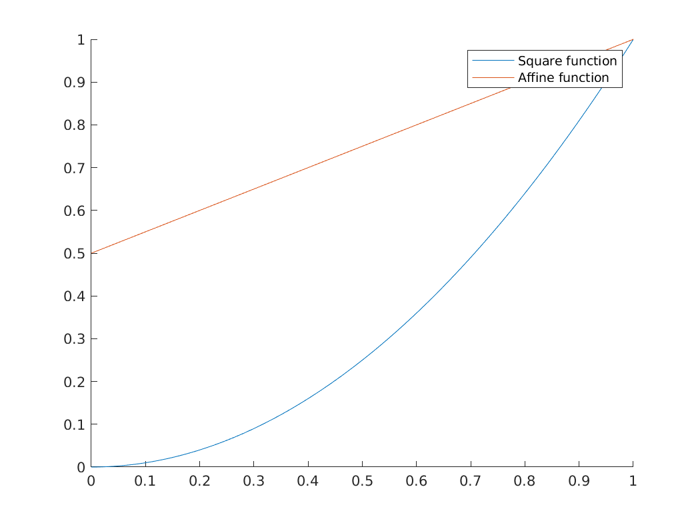
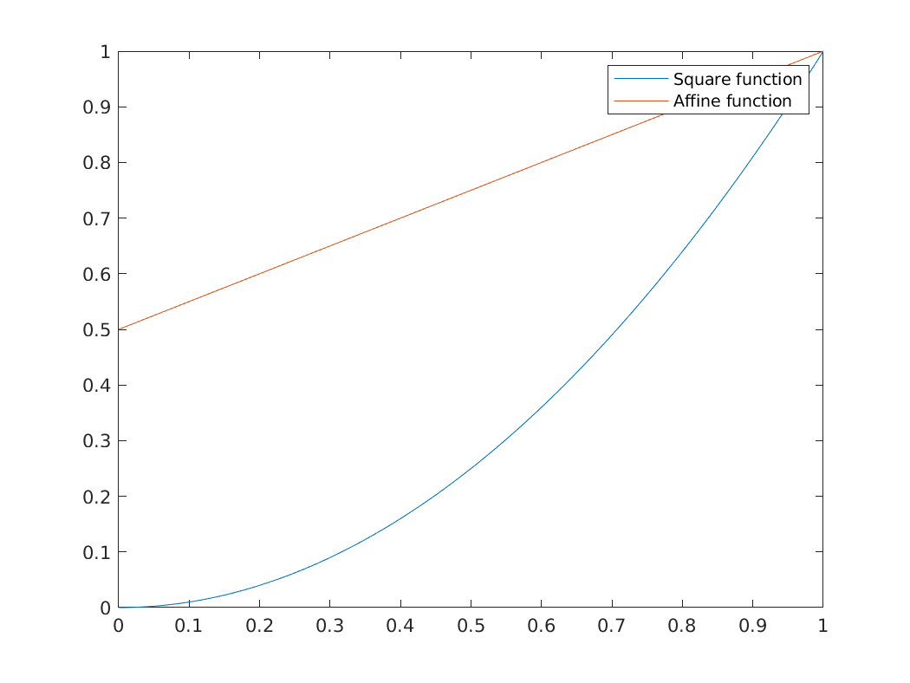
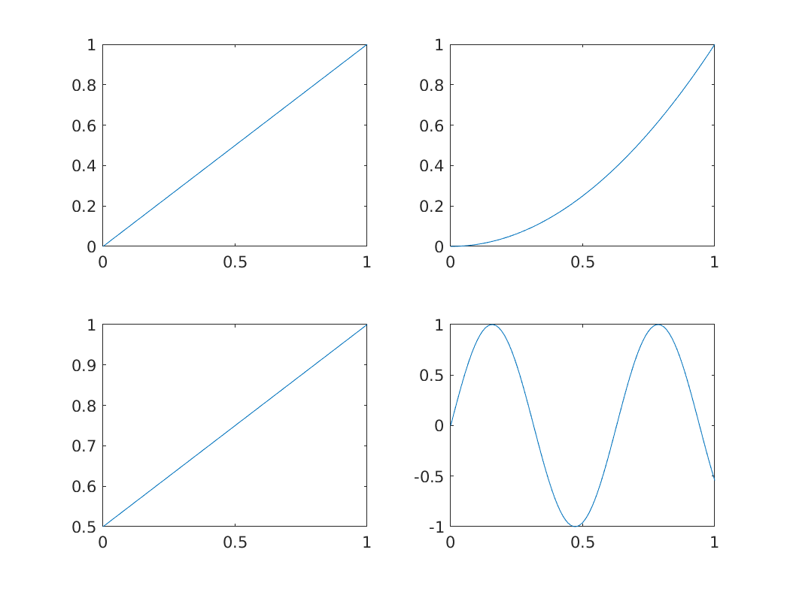
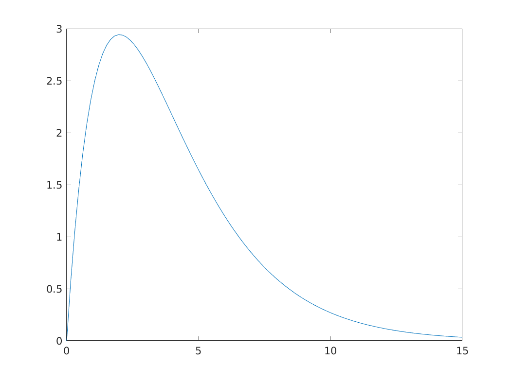

Intro to MATLAB
(Almost) everything is a matrix
- In MATLAB, the most common data type is a matrix of real (or more precisely, floating point) numbers.
- All the following commands create an object of the type Matrix, with floating point elements:
u = [1,2.5,3]; % Ending with semicolon suppresses output A = [1 2 3; 4 5 6]; b = 2.5; c = pi;
You can inspect dimension of the objects by applying the function
sizesize(u) size(A) size(b) size(c)
size(u) ans = 1 3 size(A) ans = 2 3 size(b) ans = 1 1 size(c) ans = 1 1- There are data types other than matrices. For example
- structs
- An object that groups sub-objects of any type.
- characters/strings
- used to store text
- tables
- as the name suggests, ; similar to
data.framein R
- For details, check out the matlab documentation on data types
Basic matrix commands
- zeros
generates a matrix of zeros of specified dimension.
zeros(2,2) zeros(3,1)
zeros(2,2) ans = 0 0 0 0 zeros(3,1) ans = 0 0 0- ones
- similar to
zeros, but with ones - diag
- if the input is a
row/column vector: creates a diagonal matrix whose main diagonal consists of those elements
diag([1,2,5])
diag([1,2,5]) ans = 1 0 0 0 2 0 0 0 5matrix: extracts the main diagonal of the matrix.
my_mat = [1, 2, 3; 4, 5, 7] diag(my_mat)
my_mat = [1, 2, 3; 4, 5, 7] my_mat = 1 2 3 4 5 7 diag(my_mat) ans = 1 5
Accessing elements
To access element i,j of a matrix
M, useM(i,j)M = [10 2 5; 42 1 1]; M M(2,1)
M = [10 2 5; 42 1 1]; M M = 10 2 5 42 1 1 M(2,1) ans = 42For this to work, indices must be "in bounds", i.e., if your matrix is \(n\times m\), make sure \(i \in \{1,\ldots, n\}\) and \(j \in \{1,\ldots, m\}\).
In the above example, for example
M(5,1)will give an error because the matrix has 2 rows and we're trying to access row number 5.M(5, 1)
M(5, 1) <ERRORTXT> Index in position 1 exceeds array bounds (must not exceed 2). </ERRORTXT>
Random numbers
- In many applications, we need to generate random numbers of a given probability distribution
- MATLAB has some built-in random number generators:
Uniform[0,1]
unif_number = rand unif_square_mat = rand(3) unif_general_mat = rand(3,5)
unif_number = rand unif_number = 0.2715 unif_square_mat = rand(3) unif_square_mat = 0.3986 0.1029 0.4235 0.1849 0.6252 0.3720 0.9538 0.4417 0.8683 unif_general_mat = rand(3,5) unif_general_mat = 0.2805 0.8645 0.1091 0.4103 0.2451 0.0206 0.2769 0.0934 0.6617 0.0132 0.9181 0.5235 0.8375 0.9432 0.0241Normal(0,1)
stdnorm_number = randn stdnorm_square_mat = randn(3) stdnorm_general_mat = randn(3,5)
stdnorm_number = randn stdnorm_number = 1.0675 stdnorm_square_mat = randn(3) stdnorm_square_mat = 1.1556 0.1906 -0.7340 -0.0972 1.0827 0.5554 -0.4344 0.3336 -1.5225 stdnorm_general_mat = randn(3,5) stdnorm_general_mat = -0.5447 0.5574 2.5437 0.9128 0.1785 0.7483 -0.5392 0.4758 -0.6725 1.2047 -0.5804 -0.7676 -1.2184 -0.6238 0.5713
- Importantly, every subsequent draw of a random number, within a vector or otherwise, is independent of previous draws
Exercises
- Create a 15x1 vector where each component is drawn independent from a Uniform[0, 1] distribution
- Create a 2x2 matrix where all elements but (2,1) are independent standard normal, and entry (2,1) is uniform[0,1].
- Create a 2x2 matrix where all elements are drawn independent U[-1, 2]
- Create a 2x2 matrix where all elements are drawn independent N(1, 0.16)
- Create a vector where each entry is one of \(\{1,2,3,4\}\) according to the probability mass specification (0.01, 0.09, 0.8, 0.1)?
- How do you tell if the draw in (5) was reasonable?
Seeding and reproducibility
- Note that if I type
randhere and you do the same on your computer, the output will be two different numbers - Problem: if I haven't seen you actually generate the number, how do I know it's random?
- If my results depend on simulation, I might have just made up random-looking numbers that have some desired output
To avoid that, always seed code that uses simulations.
To generate a random number generator seed, use
rng:rng(123) my_random_number = rand
rng(123) my_random_number = rand my_random_number = 0.6965will consistently output 0.6965, on anyone's computer.
IN_PROGRESS Plotting
- The main plotting command for 2d plots is
plot - Examples:
Plotting the square function for integers from 1 to 100
x = 1:100; y = x.^2; plot(x,y);

Note how Matlab creates a line by default. You can change this with the third argument in the plot function. For example,
plot(x,y, 'o');
- That literally sets 'o' instead of a line. You can use '–' for a dashed line, '-.' for a dashed-dotted line, '+' for pluses, among other options
For setting a color, append the starting letter of a sufficiently normal color. For example, '–r' will set a red dashed line.
plot(x,y, '--r');
Comparing curves
- Let's consider the following case: we want to compare the functions \(x \mapsto x^2\) and \(x \mapsto 0.5 + x/2\)
- There are two major ways of proceeding:
Two plots side by side
This can be done by using
hold onand using theplotcommand twice:x = linspace(0, 1, 100); % Creates equally spaced range between 0 and 1 with 100 points y = x.^2; z = 0.5 + x/2; figure; hold on; plot(x,y); plot(x,z); legend('Square function', 'Affine function')

Alternatively, you can also put the y-axis vectors side by side in a matrix:
Y = [y' z']; figure; plot(x, Y); legend('Square function', 'Affine function') % Notice the order!

- Note that I took the transpose of inner vectors when defining
Ymatrix. Why?
- Note that I took the transpose of inner vectors when defining
Subplots.
As the name suggests, this technique creates multiple windows within a bigger window. The way to achieve this is with the
subplotcommand.figure; subplot(2,2,1) plot(x, x) subplot(2,2,2) plot(x, y) subplot(2,2,3) plot(x, z) subplot(2,2,4) plot(x, sin(10*x))

Example: two ways of plotting the density of a Chi2 distribution
- There are roughly two ways of plotting the density of a random variable
- If you can sample from this variable: take a very large sample and
create a histogram. The
histcommand achieves this. - If you know the expression for the density function: choose a reasonable support and plot
- If you can sample from this variable: take a very large sample and
create a histogram. The
- In this section, we'll apply it to a \(\chi^2(q)\) distribution. Let's take \(q=4\) for example.
Sample histogram
Remember that a \(\chi^2(q)\) is has a distribution identical to the sum of \(q\) independent standard normal random variables.
Suppose we want to sample \(4\) independent normal, 100 times. We can use the
randncommand to find a 4x100 matrix with independent normal entries:rng(123); % for reproducibility q = 4; N = 100; sampmat = randn(q, N)rng(123); % for reproducibility q = 4; N = 100; sampmat = randn(q, N) sampmat = Columns 1 through 20 0.7643 0.6680 -0.0329 -0.1337 -0.9109 0.3199 0.6204 -1.3698 -0.1307 -0.2998 0.4115 1.8972 0.0556 0.2395 -0.3144 0.3836 0.6471 -0.9348 0.6645 0.1759 -0.6050 -0.3235 -0.2951 -1.6757 -0.4629 1.0635 -0.6453 0.5432 -0.0114 1.4971 -0.9203 -0.3906 0.4595 0.1281 0.8633 0.3905 -1.0154 0.1489 1.6328 -0.7875 -1.0350 1.3343 -0.5548 -0.3487 0.1227 0.9011 -0.3651 -1.7078 -0.1020 1.3880 -0.5611 -0.0519 -1.1444 -0.1056 0.8507 0.2848 1.3058 -1.2745 -1.4531 -1.4320 0.2014 0.6214 0.5644 0.8456 0.0900 0.2872 -0.5834 -0.0646 -0.9234 0.0054 -0.3199 1.0352 1.4071 -0.4961 0.0305 0.5555 -0.4932 0.7013 0.2287 0.3060 Columns 21 through 40 -0.5639 1.9763 -0.5209 0.1057 -0.6810 -0.8521 0.8199 -0.8021 -0.4845 1.0377 0.9510 0.7900 0.6687 -0.0410 -0.3965 -0.0563 0.4637 -0.8053 0.4996 -0.0722 0.9787 1.3292 -0.3308 0.9244 -0.7501 -1.8032 0.2356 -0.6939 0.1651 -0.9418 1.5986 -0.3753 0.9366 -1.4532 -0.8986 0.7580 0.9052 -1.4144 1.1962 0.9143 0.1126 -0.3862 0.6717 -0.8205 0.0128 -0.5227 1.1666 -0.9217 0.2641 -0.6009 -0.9474 1.1072 2.1616 -0.2536 0.9245 0.7525 -1.4550 0.4543 0.5396 0.1487 -0.2888 -0.9730 0.3239 -0.4174 0.5437 0.3189 -0.4307 0.4160 0.0522 0.0465 0.2020 -0.6289 -0.5440 0.0958 0.0851 -1.2589 1.2302 -0.7607 -0.1148 -2.0146 Columns 41 through 60 0.2791 0.4563 0.7269 -1.2672 0.1768 -0.1686 1.4277 -0.4585 -1.7421 0.0629 0.8382 1.0147 -0.1888 -1.0980 -0.1295 1.3305 -0.8242 -0.2875 -0.5016 -0.8053 0.9455 0.1866 1.1230 -1.3821 -1.1549 1.4072 0.2314 0.7610 0.6630 -0.5345 0.3852 -1.1110 1.0779 -0.6513 1.5017 -1.4459 -0.7645 0.7326 2.1148 1.3945 -0.3052 0.7220 2.1585 -0.1410 -0.9129 -1.7954 -0.6871 -1.6028 -0.1040 0.5200 -0.9514 0.5722 -0.1063 1.3999 -0.4979 -0.0886 -0.4260 1.0910 0.1256 -0.1717 0.5275 -1.5877 -0.5204 -0.3604 0.8189 0.1522 0.4902 0.4026 -2.2533 2.0192 0.6109 0.0451 -0.0826 -1.0043 1.5726 0.0067 -1.1713 -1.2065 0.4122 -0.7754 Columns 61 through 80 -0.1201 1.0220 -0.4463 2.0399 -1.4297 -1.8444 0.5422 0.1013 0.3577 -1.1203 1.9443 -0.2614 -2.7471 -1.7090 -1.6271 -0.3511 0.1676 -0.0478 0.0020 -0.4519 1.3905 -0.6396 -1.0389 -2.4393 0.8327 -1.3209 -0.5984 -1.0982 -2.1531 1.3365 1.6528 1.4315 1.5767 0.2214 -1.0798 0.1561 0.3528 1.3159 -1.2370 -1.7271 -0.3853 -0.1953 1.8187 -0.2802 -0.8823 -0.9505 -0.5685 0.2782 1.4067 -1.9386 0.5409 -0.4229 0.4397 -1.5579 -0.6726 0.2409 -0.2775 0.0377 -0.0940 -0.4524 0.4546 0.5192 0.5687 0.0055 -0.3097 -0.5454 -3.1862 -0.4894 -2.7650 0.4750 2.8277 0.5680 0.6109 0.3100 1.3673 -1.6355 -0.4030 0.1412 1.6929 -0.4111 Columns 81 through 100 2.2026 1.2743 -0.7729 -0.3978 0.6668 -0.4822 1.4167 -0.8023 -0.1832 -0.8813 -0.5600 0.1331 -0.5765 -0.4485 0.7756 0.3012 0.7505 -0.3824 -0.0796 0.5415 -1.4089 0.3615 -0.3012 1.2967 -0.6792 1.5929 -0.3500 -0.8887 0.2415 -0.3166 0.1695 -0.4242 0.8983 -0.3193 0.4899 0.2104 -0.0233 -0.3039 -0.4454 -1.4456 0.4615 1.4176 0.6867 1.4745 -0.6828 1.2880 -1.0007 -1.3137 -1.2115 0.8128 0.2767 0.7642 -0.1670 1.4805 -0.9281 -0.7942 -0.9622 -0.6908 1.3059 0.9210 0.5653 -0.4210 -0.3575 -0.3599 -0.4586 0.6267 -1.1905 0.3461 0.5773 0.2122 2.6579 0.8006 1.1440 0.5194 -0.0814 -0.4334 -0.5629 2.2298 -0.5575 -0.0454Now we can square all elements, and do row-wise sum using the function
sum:sampmat_sq = sampmat .^ 2; samp = sum(sampmat_sq, 1)sampmat_sq = sampmat .^ 2; samp = sum(sampmat_sq, 1) samp = Columns 1 through 20 2.0620 2.7175 0.7145 3.6625 1.0673 2.1279 1.2749 5.0921 0.8802 4.2579 1.4335 4.8261 3.5037 0.3310 1.5688 0.6894 3.3983 3.0122 5.2714 2.7953 Columns 21 through 40 1.3720 6.7683 0.9369 1.7132 1.3221 4.3527 2.2742 2.1475 0.3345 2.3271 4.3982 2.3863 6.2931 2.1869 1.8267 2.7289 4.6646 3.4340 1.9849 4.9219 Columns 41 through 60 1.3433 3.2852 6.7195 3.6659 2.8689 5.2551 2.8042 3.5204 8.5626 4.6371 2.1294 2.5933 1.2156 4.5982 4.9926 3.8688 2.8171 3.2651 4.9097 3.2237 Columns 61 through 80 2.3030 1.7613 4.9094 10.1903 3.6119 6.3474 11.1274 1.5332 14.3879 7.0249 14.8002 2.6190 10.5992 5.4928 6.1352 2.8805 0.3920 1.7552 4.4047 3.5609 Columns 81 through 100 7.3689 3.9414 1.2876 4.1435 1.5825 4.8215 4.5483 3.2792 1.8929 1.5827 7.4834 1.4227 2.4759 2.7648 1.7096 0.9537 1.8065 5.6879 2.2208 3.2334
Using the closed form expression
From Wikipedia, the pdf of a \(\chi^2(4)\) random variable is \[ \frac{1}{2^{q/2} \Gamma(q/2) } x^{q/2 - 1} e^{-x/2} \]
xmax = 15; npoints = 100; q = 4; x = linspace(0, 15, npoints); integr_const = 2^(q/2) * gamma(q/2); y = integr_const * x.^(q/2 - 1) .* exp(-x/2) % Why am I adding dots here? figure; plot(x, y)

IN_PROGRESS Functions
- An important part of sane programming is to decompose your code in independent modules
- That is crucial for code reuse and readability
Consider the following example. Suppose you have a matrix \(M\)
rng(123) % Randomly generated matrix M = rand(5)